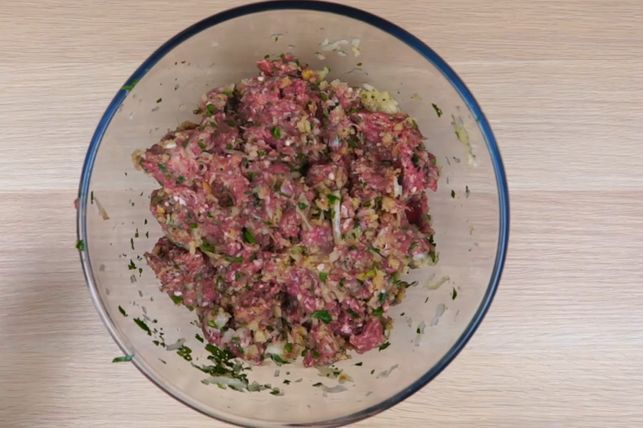
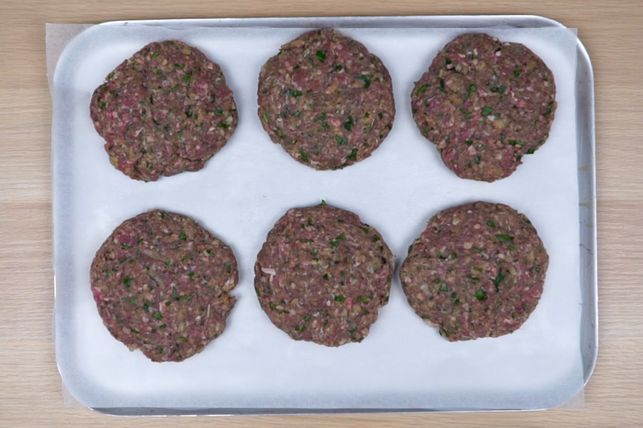
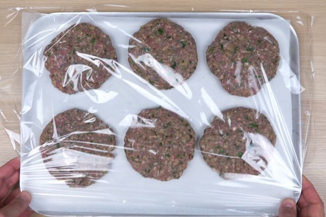
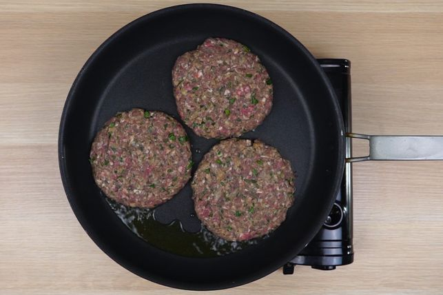
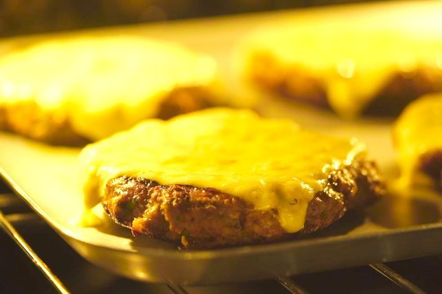
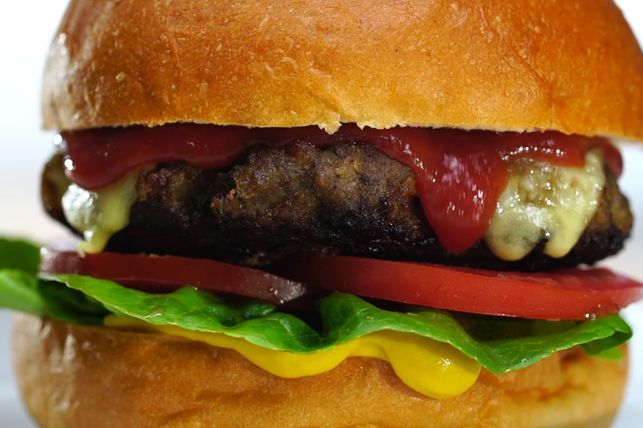

When done right, a beef burger is food for the soul, but so often the burger you order can be a massive disappointment: dense bread with a dry patty, limp lettuce and not nearly enough sauce. Take all the guesswork out of the equation and start making your own burgers at home.
Line a tray with baking paper. Place the beef mince, breadcrumbs, onion, parsley, garlic, egg, Worcestershire sauce and Tabasco sauce, if using, in large bowl. Use your hands to mix until just combined.
Divide the mixture into 6 equal portions. Shape each portion with your hands into a patty about: 10cm in diameter and 1.5cm thick.
Place the patties on prepared tray. Cover with plastic wrap and place in the fridge for at least 30 minutes to rest.
Heat half (1tbs) the olive oil in a large non-stick frying pan over medium-low heat. Cook half the patties for about 4 minutes each side or until browned and cooked through. Transfer the patties to a plate. Set aside and cover to keep warm. Repeat with the remaining half (1tbs) the olive oiland patties.
Meanwhile, preheat the grill on high. Line a baking tray with foil. Place the hamburger buns, cut-side up, under the grill and toast for 1 minute or until golden. Leave the grill on. Place the patties on prepared tray. Top patties with cheddar. Place under the grill for 1 minute or until the cheddar is just melted.
Spread the bottom halves of the toasted hamburger buns with the mustard, if using. Top with the lettuce, tomato and patties. Dollop with tomato sauce. Cover with the hamburger bun tops to serve.
